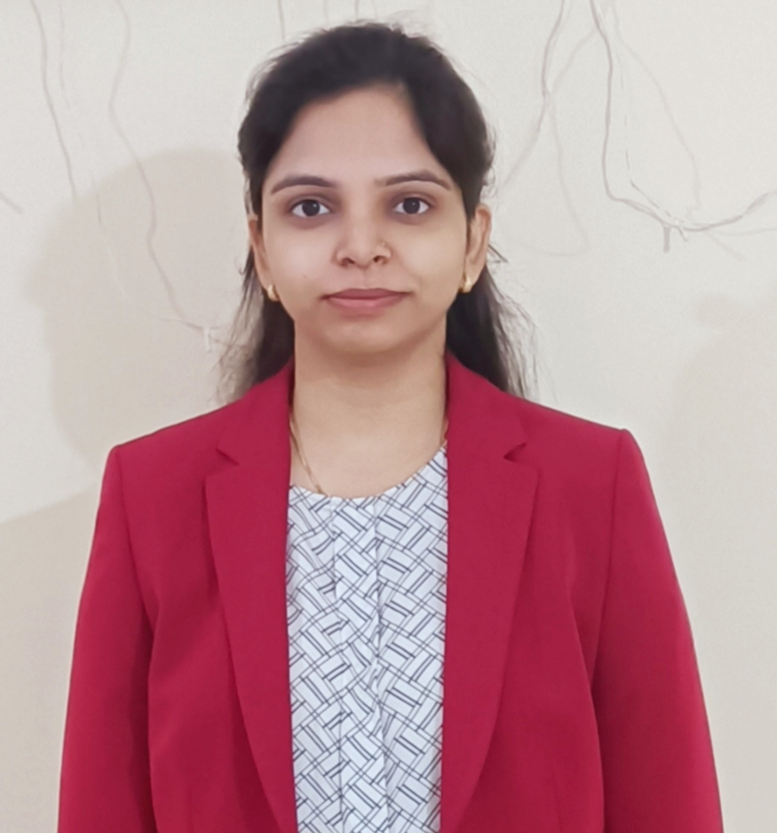

Submitted PhD thesis at IIT Goa.
PhD Candidate · Indian Institute of Technology Goa, India
Akanksha Mishra
Artificial Intelligence · Machine Learning · Computational Biology · Natural Language Processing
I am a final year PhD candidate in Computer Science at IIT Goa. My research explores machine learning and artificial intelligence methods for complex scientific and real-world problems, with interests spanning computational biology, cancer genomics, interpretable deep learning, and natural language processing. Prior to joining PhD, I worked as a research assistant at IIT BHU. Also, I worked as a Teaching Fellow/Co-Instructor at IIIT Delhi and BML Munjal University.

News
Latest updates
Submitted a manuscript on “Multi-objective decision making through bayesian learning of hidden preferences". This is a joint work with Wei Xia, Amazon and Clint P George, IIT Goa.
Gave my pre-dissertation talk as part of my PhD at IIT Goa.
Published an article titled "A weight-sharing Bayesian neural network for consistent feature selection with applications in cancer gene expression data" in BMC Bioinformatics journal. This is a joint work with Wei Xia, Amazon and Clint P George, IIT Goa.
Awarded a travel grant to attend IndoML 2024 at BITS Pilani Goa to be held on 21-23 December 2024.
Published an article titled "Shielding Against Online Harm: A Survey on Text Analysis to Prevent Cyberbullying" in Engineering Applications of Artificial Intelligence Journal. This is a joint work with Sharad Sinha and Clint P George, IIT Goa.
Research
Research interests
Machine Learning & Artificial Intelligence
Developing and applying machine learning and deep learning methods to challenging problems involving complex, high-dimensional data.
Computational Biology & Cancer Genomics
Using computational and AI-based approaches to analyze biological data and investigate problems in genomics and cancer biology.
Interpretable & Trustworthy AI
Exploring methods that make machine learning models more interpretable, transparent, and useful for scientific decision-making.
Natural Language Processing
Applying text mining and natural language processing to understand large-scale textual and social-media data.
Publications
Selected publications
2026
A weight-sharing Bayesian neural network for consistent feature selection with applications in cancer gene expression data
Paper ↗BMC Bioinformatics
2024
Shielding Against Online Harm: A Survey on Text Analysis to Prevent Cyberbullying
Paper ↗Engineering Applications of Artificial Intelligence
2022
A Multi-stage Classification Framework for Disaster-Specific Tweets
Paper ↗SN Computer Science
2019
IIT BHU at TREC 2019 Incident Streams Track
Paper ↗The Twenty-Eighth Text REtrieval Conference (TREC)
2019
IIT Varanasi at HASOC 2019: Hate Speech and Offensive Content Identification in Indo-European Languages
Paper ↗11th meeting of Forum for Information Retrieval Evaluation (FIRE)
2018
Language Independent Automatic Framework for Entity Extraction in Indian Languages
Paper ↗10th meeting of Forum for Information Retrieval Evaluation (FIRE)
Contact
Interested in collaborating?
I am interested in research collaborations, academic discussions, and opportunities at the intersection of Artificial Intelligence, Machine Learning, and Computational Biology.
Get in touch